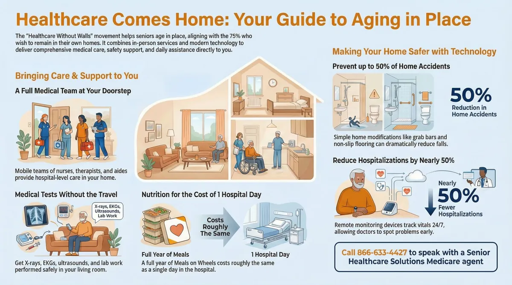
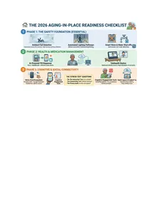

Aging tech: care in 2026
Telehealth, smart monitoring and simple tools that make care at home safer — explained without the jargon.
From Reactive to Predictive: The AI Revolution
The biggest shift we’ve seen this year is the move away from "waiting for a fall" to "predicting the risk." AI-powered health monitoring has moved into the background of our lives.
- Ambient Sensors: New "edge AI" devices, like those showcased at CES 2026, now monitor gait and sleep patterns without cameras, preserving privacy while alerting families to subtle changes in health before an emergency occurs.
- Smart Wearables: Devices are no longer just step counters. They are personal health navigators tracking oxygen saturation and heart rhythm with clinical-grade accuracy.
Expert Tip: If you're looking for vetted technology, the LeadingAge Center for Aging Services Technologies (CAST) offers incredible selection tools to help families choose the right tech.
Healthcare Without Walls
In 2026, the home is the primary hub for wellness. Telemedicine has evolved from a simple video call into a Connected Care Ecosystem. Through Remote Patient Monitoring (RPM), your vitals are sent directly to your doctor's office in real-time.
- Government Support: The U.S. Administration on Aging (AoA) has expanded programs to help seniors access these digital tools, ensuring that "aging in place" isn't just a dream, but a safe reality supported by federal resources.
- Virtual Communities: Loneliness is being tackled head-on through platforms like the National Council on Aging (NCOA), which provides virtual social engagement and wellness programs.
Smart Tools for the Modern Caregiver
For the millions of family caregivers, 2026 has brought much-needed relief in the form of Durable Medical Equipment (DME) that actually thinks.
Technology Benefit for Seniors Benefit for Caregivers
Smart Walkers GPS & Obstacle Detection Real-time location alerts
AI Dispensers Precise medication timing Reduced "medication anxiety"
Robotic Companions Cognitive stimulation Respite and reduced agitation
Staying Informed and Connected
Whether you are a senior exploring new ways to stay independent or a professional looking for the latest research, staying connected to reputable sources is vital. Here are my "Must-Bookmark" resources for 2026:
- Health & Research: National Institute on Aging (NIA) – The gold standard for science-based aging info.
- Advocacy & Discounts: AARP – Still the powerhouse for senior rights and lifestyle resources.
- Professional Networking: American Society on Aging (ASA) – Ideal for those of us working in the field to keep our skills sharp.
Closing Thoughts
Technology should never replace the human touch; it should enhance it. By offloading the stress of monitoring and scheduling to smart systems, we free up more time for what truly matters: connection, legacy, and joy.
"Prepare your home for the future – Contact us for a tech-readiness consultation today."
🏠 The 2026 Aging in Place Readiness Checklist
Senior Technology Readiness Checklist
Designed to help you audit your home or facility for the most impactful tools available today.
Download "Aging-In-Place Technology Readiness Checklist.pdf"

